Use Pascal’s Triangle to expand a binomial. (IA 12.4.1)
Objective 1: Use Pascal’s Triangle to expand a binomial. (IA 12.4.1)
Pascal’s triangle helps us find the coefficients of the terms in the expansion of a binomial.
To find the coefficients of the terms, we write our expansion again focusing on the coefficients. We rewrite the coefficients to the right forming an array of coefficients. The array to the right is called Pascal’s Triangle.
Notice that in each expansion the powers of a in each term decrease from n to 0, and the powers of b increase from 0 to n.
Notice each number in the array is the sum of the two closest numbers in the row above. We can find the next row by starting and ending with one and then adding two adjacent numbers.
To find the coefficients of the expansion of the binomial , go to the row that has the value n as a second entry.
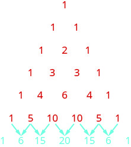
Use Pascal’s Triangle to expand .
Go to Pascal’s Triangle and read off the coefficients from the row whose second entry is 6.
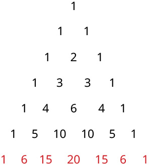
Write the expansion with the coefficients.
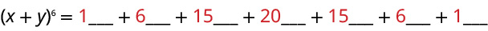
Fill in the variable with the power of x decreasing from 6 to 0, and the power of y increasing from 0 to 6.
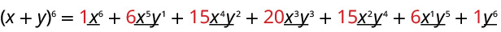
Binomial expansion of .
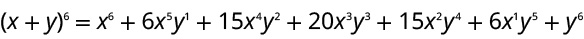
Use Pascal’s Triangle to expand .
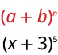
Go to Pascal’s Triangle and read off the coefficients from the row whose second entry is 5.
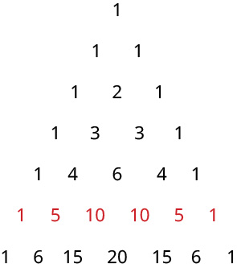
Write the expansion with the coefficients.
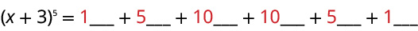
Fill in the variable with the power of x decreasing from 5 to 0, and the power of 3 increasing from 0 to 5.
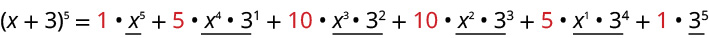
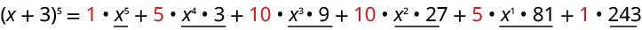
Binomial expansion of .
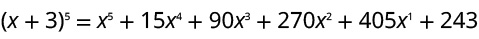
Use Pascal’s Triangle to expand .
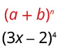
Go to Pascal’s Triangle and read off the coefficients from the row whose second entry is 4.
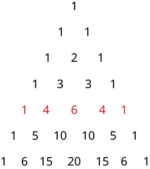
Write the expansion with the coefficients.
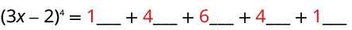
Fill in the variable with the power of (3x) decreasing from 4 to 0, and the power of (-2) increasing from 0 to 4.
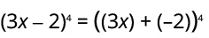
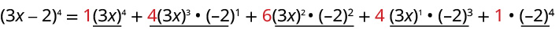
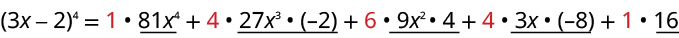
Binomial expansion of .
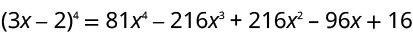
Practice Makes Perfect
Use Pascal’s Triangle to expand a binomial.
Use Pascal’s Triangle to expand .
Use Pascal’s Triangle to expand .
Use Pascal’s Triangle to expand .
A polynomial with two terms is called a binomial. We have already learned to multiply binomials and to raise binomials to powers, but raising a binomial to a high power can be tedious and time-consuming. In this section, we will discuss a shortcut that will allow us to find without multiplying the binomial by itself times.
Identifying Binomial Coefficients
In Counting Principles, we studied combinations. In the shortcut to finding we will need to use combinations to find the coefficients that will appear in the expansion of the binomial. In this case, we use the notation instead of but it can be calculated in the same way. So
The combination is called a binomial coefficient. An example of a binomial coefficient is
Binomial Coefficients
If and are integers greater than or equal to 0 with then the binomial coefficient is
Is a binomial coefficient always a whole number?
Yes. Just as the number of combinations must always be a whole number, a binomial coefficient will always be a whole number.
Finding Binomial Coefficients
Find each binomial coefficient.
ⓐ
ⓑ
ⓒ
Use the formula to calculate each binomial coefficient. You can also use the function on your calculator.
ⓐ
ⓑ
ⓒ
Analysis
Notice that we obtained the same result for parts (b) and (c). If you look closely at the solution for these two parts, you will see that you end up with the same two factorials in the denominator, but the order is reversed, just as with combinations.
Find each binomial coefficient.
ⓐ
ⓑ
ⓐ35
ⓑ330
Using the Binomial Theorem
When we expand by multiplying, the result is called a binomial expansion, and it includes binomial coefficients. If we wanted to expand we might multiply by itself fifty-two times. This could take hours! If we examine some simple binomial expansions, we can find patterns that will lead us to a shortcut for finding more complicated binomial expansions.
First, let’s examine the exponents. With each successive term, the exponent for decreases and the exponent for increases. The sum of the two exponents is for each term.
Next, let’s examine the coefficients. Notice that the coefficients increase and then decrease in a symmetrical pattern. The coefficients follow a pattern:
These patterns lead us to the Binomial Theorem, which can be used to expand any binomial.
Another way to see the coefficients is to examine the expansion of a binomial in general form, to successive powers 1, 2, 3, and 4.
Can you guess the next expansion for the binomial
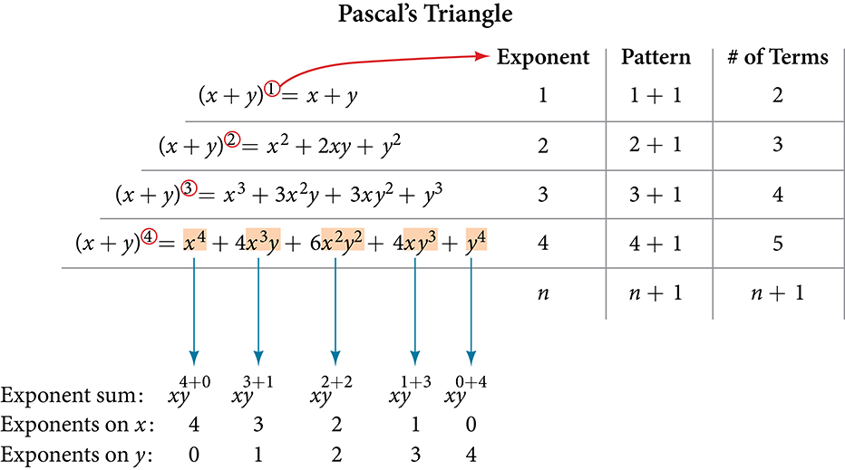
See , which illustrates the following:
There are terms in the expansion of
The degree (or sum of the exponents) for each term is
The powers on begin with and decrease to 0.
The powers on begin with 0 and increase to
The coefficients are symmetric.
To determine the expansion on we see thus, there will be 5+1 = 6 terms. Each term has a combined degree of 5. In descending order for powers of the pattern is as follows:
Introduce and then for each successive term reduce the exponent on by 1 until is reached.
Introduce and then increase the exponent on by 1 until is reached.
The next expansion would be
But where do those coefficients come from? The binomial coefficients are symmetric. We can see these coefficients in an array known as Pascal's Triangle, shown in . Pascal didn't invent the triangle. The underlying principles had been developed and written about for over 1500 years, first by the Indian mathematician (and poet) Pingala in the second century BCE. Others throughout Asia and Europe worked with the concepts throughout, and the triangle was first published in its graphical form by Omar Khayyam, an Iranian mathematician and astronomer, for whom the triangle is named in Iran. French mathematician Blaise Pascal repopularized it when he republished it and used it to solve a number of probability problems.
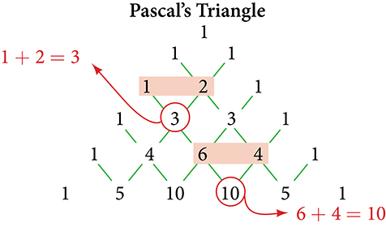
To generate Pascal’s Triangle, we start by writing a 1. In the row below, row 2, we write two 1’s. In the 3rd row, flank the ends of the rows with 1’s, and add to find the middle number, 2. In the row, flank the ends of the row with 1’s. Each element in the triangle is the sum of the two elements immediately above it.
To see the connection between Pascal’s Triangle and binomial coefficients, let us revisit the expansion of the binomials in general form.
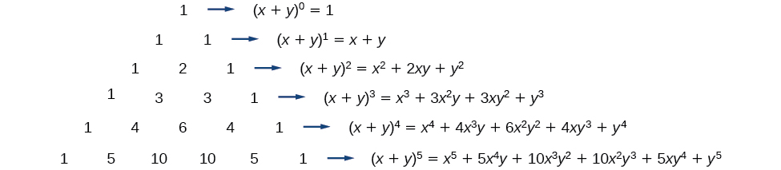
The Binomial Theorem
The Binomial Theorem is a formula that can be used to expand any binomial.
Given a binomial, write it in expanded form.
Determine the value of according to the exponent.
Evaluate the through using the Binomial Theorem formula.
Simplify.
Expanding a Binomial
Write in expanded form.
ⓐ
ⓑ
ⓐSubstitute into the formula. Evaluate the through terms. Simplify.
ⓑSubstitute into the formula. Evaluate the through terms. Notice that is in the place that was occupied by and that is in the place that was occupied by So we substitute them. Simplify.
Analysis
Notice the alternating signs in part b. This happens because raised to odd powers is negative, but raised to even powers is positive. This will occur whenever the binomial contains a subtraction sign.
Write in expanded form.
ⓐ
ⓑ
ⓐ
ⓑ
Using the Binomial Theorem to Find a Single Term
Expanding a binomial with a high exponent such as can be a lengthy process.
Sometimes we are interested only in a certain term of a binomial expansion. We do not need to fully expand a binomial to find a single specific term.
Note the pattern of coefficients in the expansion of
The second term is The third term is We can generalize this result.
The (r+1)th Term of a Binomial Expansion
The term of the binomial expansion of is:
Given a binomial, write a specific term without fully expanding.
Determine the value of according to the exponent.
Determine
Determine
Replace in the formula for the term of the binomial expansion.
Writing a Given Term of a Binomial Expansion
Find the tenth term of without fully expanding the binomial.
Because we are looking for the tenth term, we will use in our calculations.
Find the sixth term of without fully expanding the binomial.
Access these online resources for additional instruction and practice with binomial expansion.
![A plus b to the power of 0 equals 1. The top level of Pascal’s Triangle is 1. A plus b to the power of 1 equals 1 a plus 1 b. The second level of Pascal’s Triangle is 1, 1. A plus b to the power of 2 equals 1 a to the power of 2 plus 2 a b plus 1 b to the power of 2. The third level of Pascal’s Triangle is 1, 2, 1. A plus b to the power of 3 equals 1 a to the power of 3 plus 3 a to the power of 2 b plus 3 a b to the power of 2 plus 1 b to the power of 3. The fourth level of Pascal’s Triangle is 1,3,3,1. A plus b to the power of 4 equals 1 a to the power of 4 plus 4 a to the power of 3 b plus 6 a to the power of 2 b to the power of 2 plus 4 a b to the power of 3 plus 1 b to the power of 4. The fifth level of Pascal’s Triangle is 1, 4, 6, 4, 1. A plus b to the power of 5 equals 1 a to the power of 5 plus 5 a to the power of 4 b plus 10 a to the power of 3 b to the power of 2 plus 10 a to the power of 2 b to the power of 3. The sixth row of the Pascal’s Triangle is 1, 5, 10, 10, 5, 1.](9_6_1.jpg)